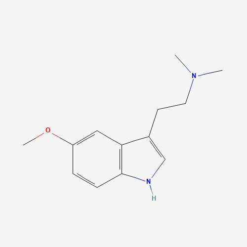

5-MeO-DMT
5-Methoxy-N,N-dimethyltryptamine
Dosage
Doses below are general reference ranges, not recommendations. 5-MeO-DMT is roughly 4–5 times as potent as DMT by weight, so amounts that are common for DMT can be an overwhelming overdose of 5-MeO-DMT. Measure with a milligram scale and start with a lower dose than you think you need.
Vaporized / smoked (mg)
| Level | Dose |
|---|---|
| Threshold | ~1 mg |
| Light | 3–6 mg |
| Common | 6–12 mg |
| Strong | 12–20 mg |
| Heavy | 20 mg+ |
Onset 5–60 seconds, come-up 30–60 seconds, peak 5–15 minutes, offset 10–20 minutes; total 20–40 minutes, with after-effects of 15–60 minutes.
Insufflated (mg)
| Level | Dose |
|---|---|
| Threshold | ~3 mg |
| Light | 5–8 mg |
| Common | 8–15 mg |
| Strong | 15–25 mg |
| Heavy | 25 mg+ |
Onset 1–10 minutes, peak 10–40 minutes, offset 30–60 minutes; total 2–3 hours, with after-effects of 1–3 hours.
Serotonin syndrome warning: combining 5-MeO-DMT with MAOIs (including the harmala alkaloids in Syrian rue and ayahuasca), SSRIs, stimulants, or other monoamine reuptake inhibitors greatly increases the risk of serotonin syndrome and can be life-threatening. See the Harmala Alkaloids page.
Source: PsychonautWiki (5-MeO-DMT).
Overview
5-Methoxy-N,N-dimethyltryptamine (5-MeO-DMT) is a naturally occurring tryptamine found in the venom of the Sonoran Desert toad (Incilius alvarius, formerly Bufo alvarius) and in numerous plant species across South America. It is broadly considered the most potent psychedelic substance known — not by dose, but by the totality of the experience it produces. Unlike N,N-DMT's richly visual architecture, 5-MeO-DMT typically produces states that transcend visuals entirely: a complete dissolution of individual identity into an undifferentiated field of pure, brilliant consciousness. Researcher and author James Oroc described it as "the experience of no-experience" — the annihilation of the experiencer.
History
5-MeO-DMT was first synthesized in 1936 by Japanese chemists Toshio Hoshino and Kenya Shimodaira. Its presence in Bufo alvarius venom was first identified by pharmacologist Albert Most in 1984, who self-experimented and published his findings in a small pamphlet that circulated in psychedelic circles. Indigenous Amazonian and Andean peoples have long used 5-MeO-DMT-containing plant preparations — including the snuffs yopo and vilca — in ceremonial contexts for divination and healing. The Sonoran toad route became more widespread after Most's publication, though indigenous communities in the region had no documented history of using toad venom — raising important questions about the ethics and origins of that particular practice.

The White Light Experience
Author and researcher James Oroc, who documented his experiences in "Tryptamine Palace," describes 5-MeO-DMT as producing an encounter with what he calls "the white light" — a luminous, all-pervading field of pure consciousness that he equates with the zero-point field of quantum physics, and with what mystics across all traditions describe as enlightenment, samadhi, or union with God. Where N,N-DMT floods consciousness with content — entities, geometric realms, alien architectures — 5-MeO-DMT empties consciousness of all content, leaving only the aware, luminous ground that was always behind experience. The return from this state is often described as a rebirth: subjects feel they have touched the source of existence itself and returned fundamentally changed.
Nondual Therapy
Transpersonal researchers working in this area describe 5-MeO-DMT as uniquely suited to nondual therapeutic work — the direct recognition that the separate self is a construction, not a fact. The substance creates the conditions for a complete energetic release of the ego's holding patterns, and the quality of the experience depends largely on the subject's willingness to surrender. Practitioners emphasize the importance of breath — specifically vocalizing and toning during the experience — as a tool to move through resistance rather than fighting the dissolution. Clinicians also identify the risk of "failure to reassemble": subjects who resist the experience can become temporarily fragmented or disoriented, reinforcing the need for skilled facilitation. Integration is not an optional afterthought in this work but the core of lasting therapeutic benefit.
Effects
Effects onset within seconds of vaporization and peak within 2–5 minutes, resolving within 15–45 minutes. The experience at threshold doses produces a profound sense of expansion and warmth. At full doses, the ordinary sense of self — body, name, history, narrative — dissolves completely. There is typically no visual content in the conventional sense; instead, subjects report pure luminous awareness, a feeling of infinite expansion, and what many describe as "coming home" to a state that is somehow more fundamental than ordinary consciousness. The afterglow can persist for hours and is often described as the most peaceful state the person has ever known.
- Intense physical surge at onset
- Cardiovascular stimulation
- Rapid breathing / urge to hyperventilate
- Involuntary movements or vocalizations
- Sweating
- Complete physical incapacitation
- Profound physical warmth (afterglow)
- White light / dissolution of visual field
- Brief colour saturation spike at onset
- Minimal or absent geometry (unlike N,N-DMT)
- Visual field collapses into pure luminosity
- Complete dissolution of visual reality
- Complete ego dissolution
- Unity / oceanic boundlessness
- Infinite expansion of awareness
- Loss of body, time, space, and self
- Mystical / nondual states
- Sense of returning home
- Profound peace (afterglow)
- Deep internal silence at peak
- Tonal buzzing at onset
- Auditory enhancement (threshold doses)
Research
A landmark 2019 study published in Frontiers in Psychiatry (Uthaug et al.) found that a single dose of synthetic 5-MeO-DMT produced rapid and sustained reductions in anxiety and depression, with improvements persisting at 4-week follow-up. 80% of participants reported improvements in life satisfaction. A 2020 survey study found significant associations between 5-MeO-DMT use and remission from depression and anxiety, with a large proportion of respondents rating the experience as among the most meaningful of their lives. Johns Hopkins, Imperial College London, and Maastricht University all have active or planned research programs. Its rapid onset, short duration, and profound efficacy make it an attractive candidate for clinical application.
Legal Status
5-MeO-DMT is classified as a Schedule I controlled substance under US federal law as of 2011. It is decriminalized in Ann Arbor, Michigan. The Sonoran Desert toad (Incilius alvarius) is a protected species in Arizona; collection of its venom is illegal. Synthetic 5-MeO-DMT is increasingly available through retreat centers operating in jurisdictions such as Mexico and the Netherlands where it is not scheduled. Environmental and ethical concerns about toad venom collection have led many researchers and practitioners to advocate exclusively for synthetic 5-MeO-DMT.
Harm Reduction
5-MeO-DMT should never be used alone — a trained, sober guide is essential. The experience produces complete incapacitation; the subject must be physically supported and positioned safely. It is absolutely contraindicated with MAOIs — the combination can be fatal, causing dangerous serotonin syndrome. Do not combine with lithium, SSRIs, tramadol, or other serotonergic drugs. Those with cardiovascular conditions should approach with extreme caution — the compound produces significant physiological activation. Personal or family history of psychosis is a contraindication. Integration support after the experience is strongly recommended: the dissolution of the self can be disorienting to process alone, and the insights require grounding in daily life to become lasting change.
This page is for educational purposes only. Nothing here constitutes legal, medical, or therapeutic advice. Know your local laws.